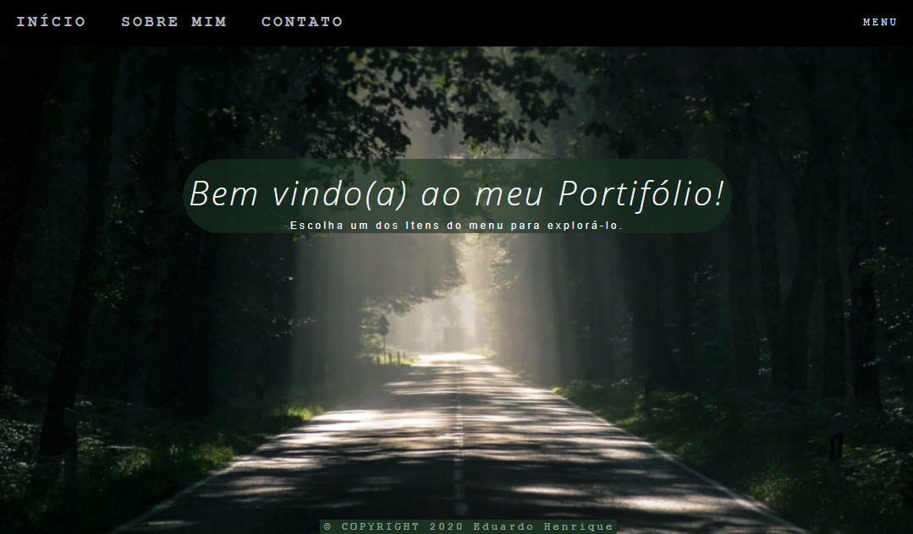
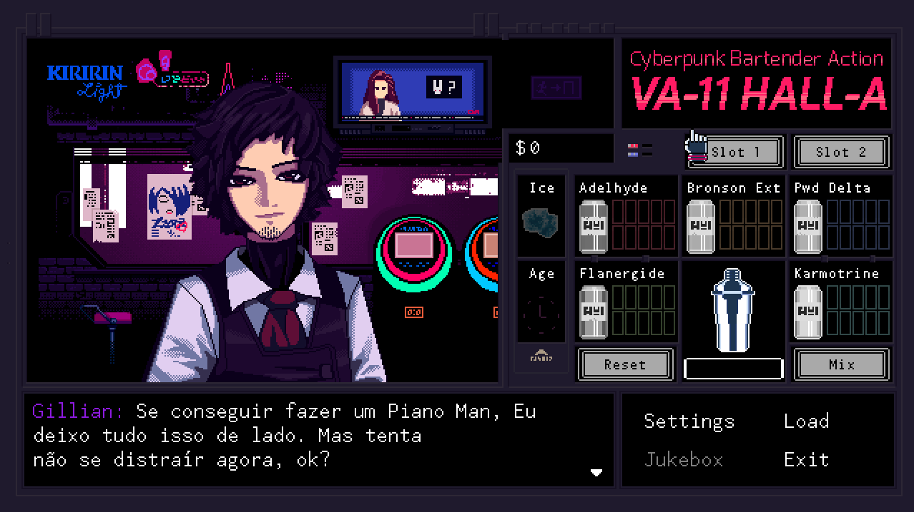

Início
Sobre Mim
Histórico
Projetos
Contato
MENU
Meus projetos

Projeto Portifolio
Um modelo de site que fiz para um projeto escolar. Apesar de ser minha primeira vez com HTML5, CSS e JavaScript, estou muito feliz com os resultados até agora.
Obrigado à Professora Giorjety pelas aulas e apoio durante o desenvolvimento deste site!

Tradução de Va-11 HALL-A
Uma tradução (PT-BR) para Vall-11 HALL-A, um jogo em que você executa a função de barista em um bar com os dias contados.